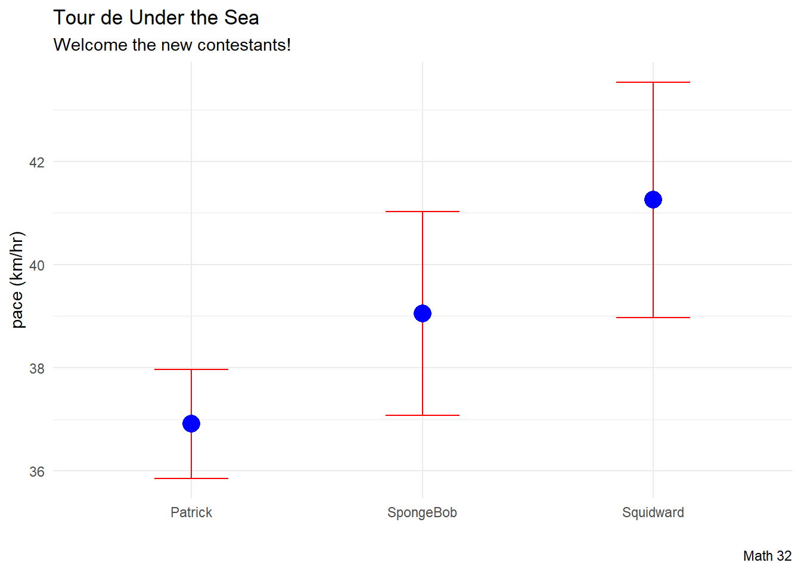

34: Introduction to Machine Learning
Goal: introduce machine learning (ideas and terminology)
Objectives:
- introduce
tidymodelspackage - practice with a
TidyTuesdaydata set
Data: Tour de France
Source: TidyTuesday data set from April 7, 2020
tdf_winners <- readr::read_csv('https://raw.githubusercontent.com/rfordatascience/tidytuesday/master/data/2020/2020-04-07/tdf_winners.csv')str(tdf_winners, give.attr = FALSE)spc_tbl_ [106 × 19] (S3: spec_tbl_df/tbl_df/tbl/data.frame)
$ edition : num [1:106] 1 2 3 4 5 6 7 8 9 10 ...
$ start_date : Date[1:106], format: "1903-07-01" "1904-07-02" ...
$ winner_name : chr [1:106] "Maurice Garin" "Henri Cornet" "Louis Trousselier" "René Pottier" ...
$ winner_team : chr [1:106] "La Française" "Conte" "Peugeot–Wolber" "Peugeot–Wolber" ...
$ distance : num [1:106] 2428 2428 2994 4637 4488 ...
$ time_overall : num [1:106] 94.6 96.1 NA NA NA ...
$ time_margin : num [1:106] 2.99 2.27 NA NA NA ...
$ stage_wins : num [1:106] 3 1 5 5 2 5 6 4 2 3 ...
$ stages_led : num [1:106] 6 3 10 12 5 13 13 3 13 13 ...
$ height : num [1:106] 1.62 NA NA NA NA NA 1.78 NA NA NA ...
$ weight : num [1:106] 60 NA NA NA NA NA 88 NA NA NA ...
$ age : num [1:106] 32 19 24 27 24 25 22 22 26 23 ...
$ born : Date[1:106], format: "1871-03-03" "1884-08-04" ...
$ died : Date[1:106], format: "1957-02-19" "1941-03-18" ...
$ full_name : chr [1:106] NA NA NA NA ...
$ nickname : chr [1:106] "The Little Chimney-sweep" "Le rigolo (The joker)" "Levaloy / Trou-trou" NA ...
$ birth_town : chr [1:106] "Arvier" "Desvres" "Paris" "Moret-sur-Loing" ...
$ birth_country: chr [1:106] "Italy" "France" "France" "France" ...
$ nationality : chr [1:106] " France" " France" " France" " France" ...colnames(tdf_winners) [1] "edition" "start_date" "winner_name" "winner_team"
[5] "distance" "time_overall" "time_margin" "stage_wins"
[9] "stages_led" "height" "weight" "age"
[13] "born" "died" "full_name" "nickname"
[17] "birth_town" "birth_country" "nationality" Early Look
tdf_winners %>%
ggplot(aes(x = height, y = time_overall)) +
geom_point(color = "blue") +
labs(title = "Are taller bicyclists faster?",
subtitle = "featuring Tour de France winners",
caption = "Source: TidyTuesday",
x = "height (meters)",
y = "time (hours)") +
theme_minimal()Warning: Removed 41 rows containing missing values (`geom_point()`).Cleaning Data
Sometimes we like to perform some preprocessing of the data. In this example, we will
- focus on the champions that were more athletic than in the early years.
- focus on biker
pace(response variable) as the route changes from year to year
df <- tdf_winners %>%
select(c(distance, time_overall,
height, weight, age)) %>%
filter(complete.cases(.)) %>%
filter(height >= 1.7) %>%
mutate(pace = distance / time_overall) %>%
select(c(pace, height, weight, age))
# dimensions
dim(df)[1] 62 4head(df)# A tibble: 6 × 4
pace height weight age
<dbl> <dbl> <dbl> <dbl>
1 31.6 1.72 66 23
2 33.4 1.72 66 33
3 32.1 1.77 68 29
4 32.2 1.77 68 30
5 34.6 1.79 75 26
6 33.2 1.79 75 29Multiple Predictor Variables


df %>%
ggplot(aes(x = height, y = pace)) +
geom_point(color = "blue", size = 2) +
geom_smooth(method = "lm", linewidth = 3,
se = FALSE, color = "red") +
labs(title = "Are taller bicyclists faster?",
subtitle = "featuring Tour de France winners",
caption = "Source: TidyTuesday",
x = "height (meters)",
y = "pace (km/hr)") +
theme_minimal()
df %>%
ggplot(aes(x = age, y = pace)) +
geom_point(color = "blue", size = 2) +
geom_smooth(method = "lm", linewidth = 3,
se = FALSE, color = "red") +
labs(title = "Are older bicyclists faster?",
subtitle = "featuring Tour de France winners",
caption = "Source: TidyTuesday",
x = "age",
y = "pace (km/hr)") +
theme_minimal()
df %>%
ggplot(aes(x = weight, y = pace)) +
geom_point(color = "blue", size = 2) +
geom_smooth(method = "lm", linewidth = 3,
se = FALSE, color = "red") +
labs(title = "Are heavier bicyclists faster?",
subtitle = "featuring Tour de France winners",
caption = "Source: TidyTuesday",
x = "weight (kg)",
y = "pace (km/hr)") +
theme_minimal()Regression via TidyModels
“With tidymodels, we start by specifying the functional form of the model that we want using the parsnip package.”
linear_reg()Linear Regression Model Specification (regression)
Computational engine: lm “However, now that the type of model has been specified, a method for fitting or training the model can be stated using the engine. The engine value is often a mash-up of the software that can be used to fit or train the model as well as the estimation method.”
linear_reg() %>%
set_engine("lm") #linear modelLinear Regression Model Specification (regression)
Computational engine: lm lm_fit <- linear_reg() %>%
set_engine("lm") %>%
fit(pace ~ height + weight + age, data = df)
lm_fitparsnip model object
Call:
stats::lm(formula = pace ~ height + weight + age, data = data)
Coefficients:
(Intercept) height weight age
3.8455 21.0987 -0.1387 0.2113 tidy(lm_fit)# A tibble: 4 × 5
term estimate std.error statistic p.value
<chr> <dbl> <dbl> <dbl> <dbl>
1 (Intercept) 3.85 12.3 0.313 0.755
2 height 21.1 8.06 2.62 0.0112
3 weight -0.139 0.0685 -2.03 0.0474
4 age 0.211 0.0979 2.16 0.0350Observe where we have p-values < 0.05
Interaction Terms
lm_fit_with_interaction <- linear_reg() %>%
set_engine("lm") %>%
fit(pace ~ height + weight + age + height:weight + height:age + weight:age +
height:weight:age,
data = df)
lm_fit_with_interactionparsnip model object
Call:
stats::lm(formula = pace ~ height + weight + age + height:weight +
height:age + weight:age + height:weight:age, data = data)
Coefficients:
(Intercept) height weight age
924.8499 -444.1560 -15.6339 -27.8628
height:weight height:age weight:age height:weight:age
7.9297 13.9352 0.4802 -0.2425 tidy(lm_fit_with_interaction)# A tibble: 8 × 5
term estimate std.error statistic p.value
<chr> <dbl> <dbl> <dbl> <dbl>
1 (Intercept) 925. 2272. 0.407 0.686
2 height -444. 1287. -0.345 0.731
3 weight -15.6 32.8 -0.477 0.635
4 age -27.9 80.3 -0.347 0.730
5 height:weight 7.93 18.5 0.428 0.670
6 height:age 13.9 45.5 0.306 0.761
7 weight:age 0.480 1.16 0.414 0.680
8 height:weight:age -0.243 0.656 -0.370 0.713This may be foreshadowing of overfitting.
Prediction
- SpongeBob is a 26-year-old, 1.77 m tall bicyclist who weighs 55 kg
- Patrick is a 25-year-old, 1.81 m tall bicyclist who weighs 75 kg
- Squidward is a 31-year-old, 1.89 m tall bicyclist who weighs 65 kg

new_contestants <- data.frame(name = c("SpongeBob", "Patrick", "Squidward"),
age = c(26, 25, 31),
height = c(1.77, 1.81, 1.89),
weight = c(55, 75, 65))
mean_predictions <- predict(lm_fit, new_data = new_contestants)
mean_predictions# A tibble: 3 × 1
.pred
<dbl>
1 39.1
2 36.9
3 41.3CI_predictions <- predict(lm_fit,
new_data = new_contestants,
type = "conf_int")
CI_predictions# A tibble: 3 × 2
.pred_lower .pred_upper
<dbl> <dbl>
1 37.1 41.0
2 35.9 38.0
3 39.0 43.5df_for_plot <- new_contestants %>%
bind_cols(mean_predictions) %>%
bind_cols(CI_predictions)
df_for_plot name age height weight .pred .pred_lower .pred_upper
1 SpongeBob 26 1.77 55 39.05386 37.07966 41.02807
2 Patrick 25 1.81 75 36.91179 35.85758 37.96601
3 Squidward 31 1.89 65 41.25491 38.97189 43.53794df_for_plot %>%
ggplot(aes(x = name)) +
geom_errorbar(aes(ymin = .pred_lower,
ymax = .pred_upper),
color = "red",
width = 0.32) +
geom_point(aes(y = .pred), color = "blue", size = 5) +
labs(title = "Tour de Under the Sea",
subtitle = "Welcome the new contestants!",
caption = "Math 32",
x = "",
y = "pace (km/hr)") +
theme_minimal()
Data Splitting
data_split <- initial_split(df)
train_df <- training(data_split)
test_df <- testing(data_split)
print(paste("The number of observations in the training set is:",
nrow(train_df)))[1] "The number of observations in the training set is: 46"print(paste("The number of observations in the testing set is:",
nrow(test_df)))[1] "The number of observations in the testing set is: 16"

title_string <- "<span style='color:#000000'><b>Training Sets</b></span> <span style='color:#0000FF'>and</span>
<span style='color:#FF0000'><b>Testing Sets</b></span>"
for(i in 1:10){
data_split <- initial_split(df)
train_df <- training(data_split)
test_df <- testing(data_split)
this_plot <- train_df %>%
ggplot(aes(x = height, y = pace)) +
geom_point(aes(color = "training set"),
# color = "black"
) +
geom_smooth(method = "lm",
aes(x = height, y = pace),
color = "black",
data = train_df,
formula = "y ~ x",
se = FALSE) +
geom_point(aes(x = height, y = pace, color = "testing set"),
# color = "red",
data = test_df,
size = 3) +
labs(title = title_string,
subtitle = "approx 75-25 percent split",
caption = "Math 32",
x = "height (meters)",
y = "pace (km/hr)") +
scale_color_manual(name = "Data Split",
breaks = c("training set", "testing set"),
values = c("training set" = "black",
"testing set" = "red")) +
theme_minimal() +
theme(legend.position = "none",
plot.title = element_markdown(hjust = 0.5),
plot.subtitle = element_text(hjust = 0.5))
ggsave(paste0("images/plot", i, ".png"),
plot = this_plot,
device = "png")
}Metrics
We then should get a sense of the validity of a model. One metric is mean square error of the test set.
\[\text{MSE} = \displaystyle\frac{1}{n_{\text{test}}}\sum_{j = 1}^{n_{\text{test}}} (y_{j} - \hat{y}_{j})^{2}\]
data_split <- initial_split(df)
train_df <- training(data_split)
test_df <- testing(data_split)
lm_train <- linear_reg() %>%
set_engine("lm") %>%
fit(pace ~ height + weight + age, data = train_df)
n_test <- nrow(test_df)
MSE <- (1/n_test)*sum((
test_df$pace -
predict(lm_train, new_data = test_df |> select(-pace))
)^2)
MSE[1] 2.773913Cross-Validation
To help generalize to a variety of testing sets, we can perform cross-validation by utilizing several training/testing set splits.
We can then compute the cross-validation error by computing the mean of the test metric.
N <- 10
MSE_vec <- rep(NA, N)
for(j in 1:N){
data_split <- initial_split(df)
train_df <- training(data_split)
test_df <- testing(data_split)
lm_train <- linear_reg() %>%
set_engine("lm") %>%
fit(pace ~ height + weight + age, data = train_df)
n_test <- nrow(test_df)
MSE_vec[j] <- (1/n_test)*sum((
test_df$pace -
predict(lm_train, new_data = test_df |> select(-pace))
)^2)
}
# vector of MSE
MSE_vec [1] 6.721709 9.335262 5.487857 10.713953 3.355675 9.758514 4.483034
[8] 12.320367 4.809474 6.830113# cross-validation error
cv_error <- mean(MSE_vec)
cv_error[1] 7.381596